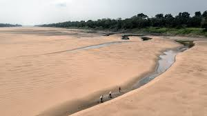

O que é a seca?
A seca é um fenômeno natural caracterizado pela falta de chuvas em um período prolongado.
Em Tefé, no Amazonas,a seca tem causado sérios impactos na agricultura e na vida das comunidades locais.Impactos e soluções para a comunidade
A seca é um fenômeno natural caracterizado pela falta de chuvas em um período prolongado.
Em Tefé, no Amazonas,a seca tem causado sérios impactos na agricultura e na vida das comunidades locais.A escassez de água tem afetado não apenas a agricultura, mas também o abastecimento de água potável.
Muitos rios que antes eram abundantes estão secando, levando a uma crise hídrica na região.A seca severa no Rio Solimões resultou em uma diminuição alarmante dos níveis de água, afetando drasticamente a fauna aquática.
As altas temperaturas e a escassez de oxigênio na água têm causado a morte de diversas espécies de peixes, além de mamíferos que dependem do rio para sobreviver.Essa situação não só impacta a biodiversidade local, mas também afeta as comunidades ribeirinhas que dependem da pesca para sua subsistência.
Para mitigar os efeitos da seca, iniciativas como a captação de água da chuva e o uso de técnicas agrícolas sustentáveis têm sido implementadas.
A conscientização da população é fundamental para a preservação dos recursos hídricos.